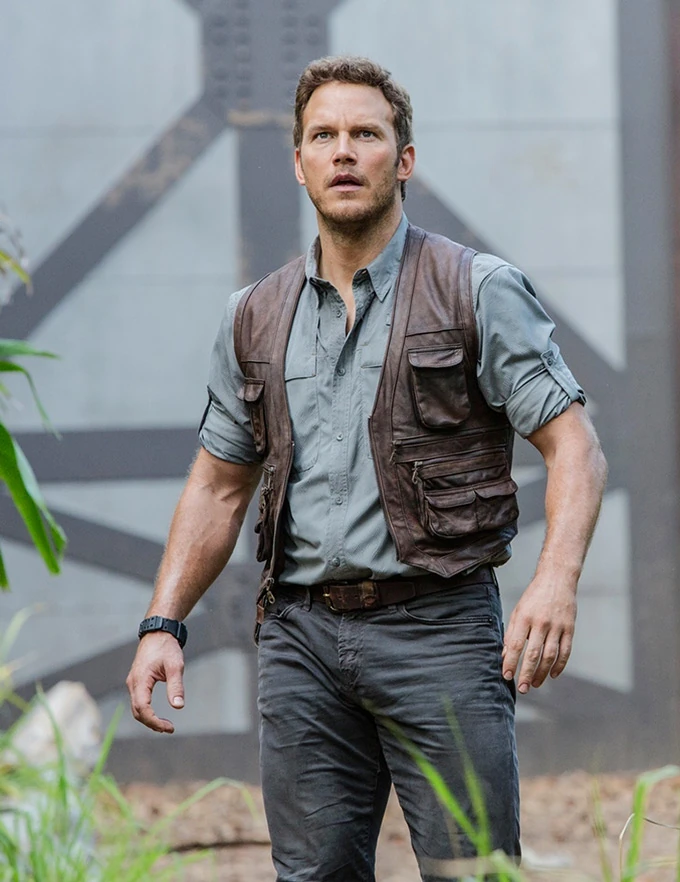
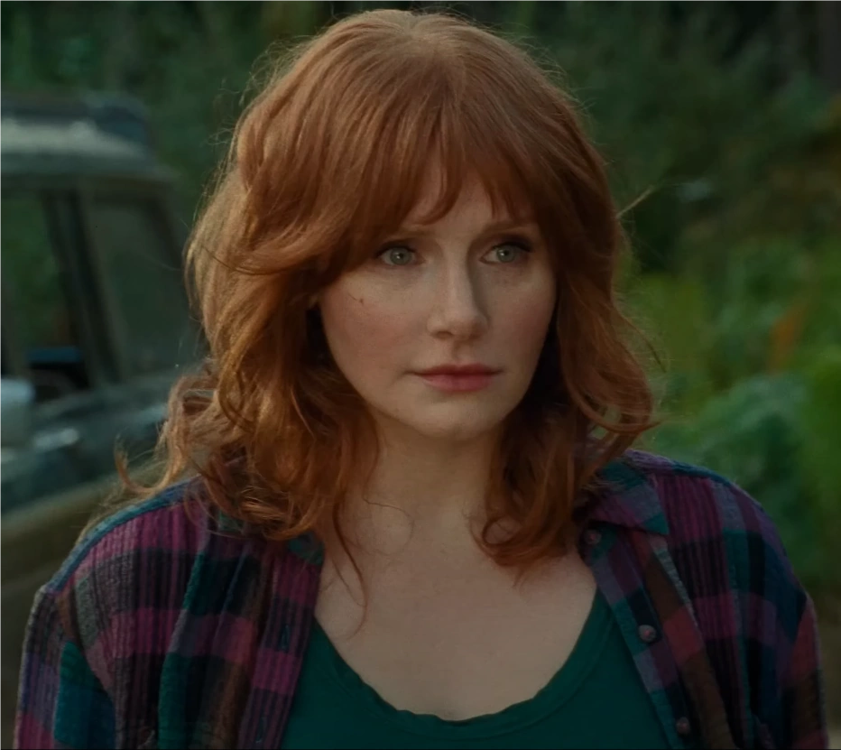
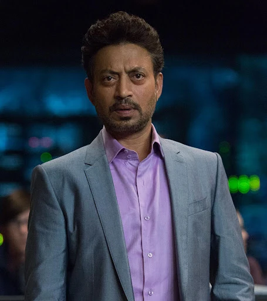
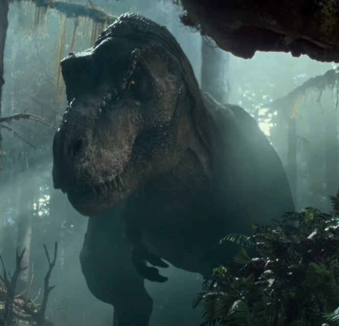

owen grady

Owen Grady es un conductista animal estadounidense anteriormente empleado por la Marina
de los Estados Unidos y la División de Seguridad de International Genetic Technologies.
Es mejor conocido por su empleo en InGen Security, donde fue el entrenador de animales líder
en el denominado Proyecto IBRIS entre 2012 y el cierre de Jurassic World en 2015. Debido a sus experiencias laborales,
Grady es considerado un especialista en el comportamiento de animales inteligentes
y uno de los principales expertos en Velociraptor
claire Dearing

Claire Dearing es una activista por los derechos de los animales y ex Gerente de Operaciones de Jurassic World.
Es ampliamente conocida por fundar el Grupo de Protección de Dinosaurios, una organización de defensa de los derechos
de los animales des-extintos con sede en San Francisco, y por actuar como Gerente de Activos, además de Gerente de Operaciones,
de Jurassic World entre 2007 y el cierre del parque a finales de 2015. Desde 2016 en adelante, ha sido una figura política prominente en la
controversia en torno a los derechos y protecciones de la vida animal des-extinta, utilizando las redes sociales y el cabildeo político para
promover la idea de que la vida des-extinta debe tener las mismas protecciones que las especies que existen de forma natural
Simon Masrani

fue un empresario y emprendedor multimillonario indio, así como el director ejecutivo de Masrani Global
Corporation desde 1992 hasta su muerte a finales de 2015. Supervisó la mayoría de los principales desarrollos de la empresa,
como la expansión de los servicios de telecomunicaciones de la subsidiaria Mascom Network y la adquisición de International Genetic
Technologies. A este último le siguió rápidamente la construcción del parque temático Jurassic World en la Isla Nublar, que se convirtió
en la empresa insignia de la compañía y en su activo más famoso. A Masrani le gustaba mucho Jurassic World
y lo consideraba el mayor logro de su empresa. Sin embargo, después de unos años, las ganancias del parque
comenzaron a estabilizarse; Masrani autorizó al genetista evolutivo Henry Wu, de InGen, a utilizar la ingeniería genética
para crear una nueva atracción para atraer multitudes más grandes, lo que resultó en la creación del híbrido Indominus rex.
Rexy (Jurassic Park)

Rexy es la Tyrannosaurus rex iconica de la saga,
siendo una antagonista secundaria en la primera novela y una protagonista en el universo de las peliculas.
fue uno de los primeros tyrannosaurus clonados por International Genetic Technologies, Inc. Es una hembra que nació en 1988,
destinada a ser exhibida en la atracción turística de des-extinción Jurassic Park, en Isla Nublar, Costa Rica.
Aunque el parque nunca se completó, este animal fue transportado con éxito a la isla, donde se alojaría durante los
próximos veintinueve años hasta su reubicación en 2018.
volver a casa